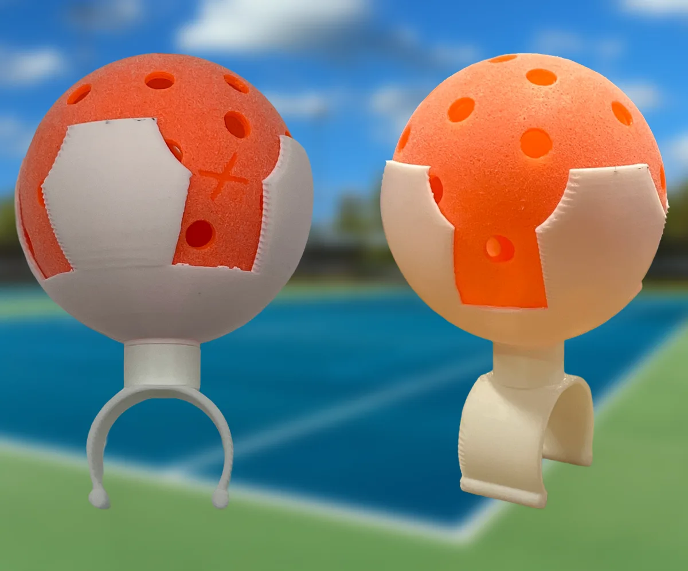

The story so far
It started at a ping pong table.

-
Ping pong balls kept rolling away
The first version was a small holder glued to a ping pong paddle, built to stop balls from blowing off the table.
-
From the table to the court
The clamp idea turned out to fit wheelchair rails. After learning about adaptive sports through the Challenged Athletes Foundation, the project shifted to wheelchair pickleball.
-
First 3D printed docks
A ball cage on a screw-on clamp. It held, but it was hard to put on and take off, and the round cage was tough to print cleanly.
-
Rebuilt to print without supports
Version 2 sits flat on the printer bed, uses thicker fingers, and swaps the screw for a slide-on dovetail.
-
Version 3 cleanup
The clamp face now matches the cup's round base exactly, and an unused zip-tie slot is gone.
-
Testing with athletes
Next up is a hands-on session with about ten wheelchair athletes in San Diego in October 2026.